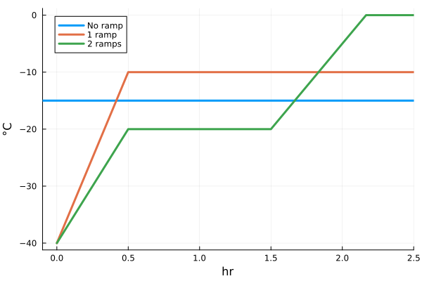
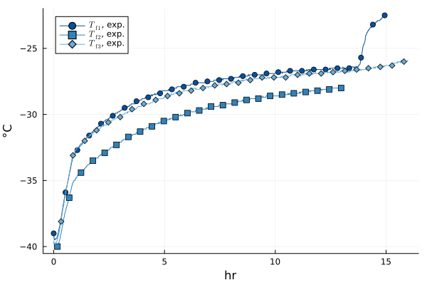
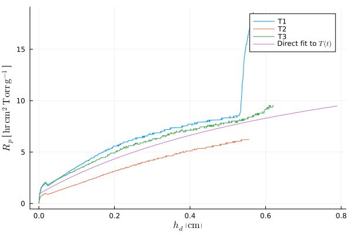

Imports
LyoPronto is this package. It reexports several other packages, so after using LyoPronto, you have effectively also done using Unitful and a few others.
using LyoProntoThese are other packages that I use in the test suite, but you can use others in their place. TypedTables provides a lightweight table structure, not as broadly flexible as a DataFrame but great for our needs
using TypedTables, CSVPlots is a frontend for several plotting packages, and its companion package StatsPlots has a very nice macro I like.
using Plotsusing StatsPlots: @dfusing LaTeXStringsFor dealing with parameter structs and making copies, Accessors provides the @set and @reset macros
using AccessorsFor helping make some nice plot labels
using Latexify: latexify, set_defaultset_default(labelformat=:square) # Sets a Latexify defaultExample Process Data
Follow along with the example data.
# Data start at 8th row of CSV file.file_loc = "./2024-06-04-10_MFD_AH.csv"procdata_raw = CSV.read(file_loc, Table, header=7)t = uconvert.(u"hr", procdata_raw.CycleTime .- procdata_raw.CycleTime[1])# At midnight, timestamps revert to zero, so catch that casefor i in eachindex(t)[begin+1:end] if t[i] < t[i-1] t[i:end] .+= 24u"hr" endend# Some of the dispatches don't like if time is not a floatt = float.(t)# Rename the columns we will use, and add unitsprocdata = map(procdata_raw) do row # In the anonymous `do` function, `row` is a row of the table. # Return a new row as a NamedTuple (pirani = row.VacPirani * u"mTorr", cm = row.VacCPM * u"mTorr", T1 = row.TP1 * u"°C", T2 = row.TP2 * u"°C", T3 = row.TP4 * u"°C", # Quirk of this experimental run: TP3 slot was empty Tsh = row.ShelfSetPT * u"°C", phase = row.Phase # identify whether freezing, primary drying, or secondary )endprocdata = Table(procdata, (;t)) # Append time to table# Count time from the beginning of experimentpd_data = filter(row->row.phase == 4, procdata)tstart_pd = pd_data.t[1]pd_data.t .-= pd_data.t[1]t_end = identify_pd_end(pd_data.t, pd_data.pirani, Val(:onoff))(18.66015837432897 hr, 20.604561173169635 hr)Example models
Conventional lyophilization
# Vial geometry# Ran with a 10mL vial, not strictly a 10R but with similar dimensionsAp, Av = π.*get_vial_radii("10R") .^ 2# Experimental conditionsT_shelf_0 = -40.0u"°C" |> u"K" # initial shelf temperature, in Kelvin for math reasonsT_shelf_final = -10.0u"°C" |> u"K" # final shelf temperatureramp_rate = 0.5 *u"K/minute" # ramp rate# Set points, followed, by ramp rate, followed by hold times if there are multiple rampsTsh = RampedVariable([T_shelf_0, T_shelf_final], ramp_rate)# Single set point with no rampspch = RampedVariable(100u"mTorr")# Formulation parameterscsolid = 0.05u"g/mL" # g solute / mL solutionρsolution = 1u"g/mL" # g/mL total solution density# Previously fitted values for RpR0 = 0.93u"cm^2*Torr*hr/g"A1 = 21.1u"cm*Torr*hr/g"A2 = 1.2u"1/cm"Rp = RpFormFit(R0, A1, A2)# Fit value for heat transfer coeffKshf = ConstPhysProp(13.9u"W/m^2/K")# FillVfill = 3u"mL"hf0 = Vfill / Appo = ParamObjPikal(( (Rp, hf0, csolid, ρsolution), (Kshf, Av, Ap), (pch, Tsh)));prob = ODEProblem(po)sol_conv = solve(prob, LyoPronto.odealg_chunk2);System setpoints and conditions with RampedVariables
Because it is very common to have a gradual ramp in temperature at the start of drying (and in general any time the set point changes), LyoPronto provides a tool for concisely describing the set point over time.
For a constant set point (with no ramps), provide a single value:
Tsh1 = RampedVariable(-15u"°C")RampedVariable(-15 °C)For a ramp from freezing temperature followed by a single hold (as is common in primary drying), provide the initial temperature, target temperature, and ramp rate:
# Convert from Celsius to Kelvin so that algebra can happen on backendTsh2 = RampedVariable([-40.0, -10]u"°C" .|> u"K", 1.0u"K/minute")RampedVariable(Unitful.Quantity{Float64, 𝚯, Unitful.FreeUnits{(K,), 𝚯, nothing}}[233.14999999999998 K, 263.15 K], 1.0 K minute^-1)For multiple ramps, provide set points, then ramp rates, then hold times in between ramps. In general, supply one less ramp than set points, and one less hold time than ramps.
Tsh3 = RampedVariable([-40, -20, 0]u"°C" .|> u"K", [2//3, 0.5]u"K/minute", [1u"hr"])RampedVariable(Unitful.Quantity{Rational{Int64}, 𝚯, Unitful.FreeUnits{(K,), 𝚯, nothing}}[4663//20 K, 5063//20 K, 5463//20 K], Unitful.Quantity{Float64, 𝚯 𝐓^-1, Unitful.FreeUnits{(K, minute^-1), 𝚯 𝐓^-1, nothing}}[0.6666666666666666 K minute^-1, 0.5 K minute^-1], Unitful.Quantity{Int64, 𝐓, Unitful.FreeUnits{(hr,), 𝐓, nothing}}[1 hr])A plot recipe is provided for all of these RampedVariables.
plot(xunit=u"hr", xlimit=(-0.1u"hr", 2.5u"hr"))plot!(Tsh1, lw=3, label="No ramp")plot!(Tsh2, lw=3, label="1 ramp")plot!(Tsh3, lw=3, label="2 ramps")
Estimating Rp over time
The standard (Pikal) model for primary drying in lyophilization consists of, fundamentally, one ODE (change in frozen layer height) with a nonlinear algebraic constraint (pseudosteady heat and mass transfer, coupled at sublimation front). Since we have a system with one ODE and one nonlinear algebraic constraint, there is only one degree of freedom at a given time point. So with temperature measurements over time, we can compute corresponding mass flow over time or mass transfer resistance over length.
In LyoPronto, this functionality is implemented with the [calc_hRp_T](@ref) function, (think "compute $Rp(h_d)$ from $T_f(t)$").
To do so, we need to know about the experimental conditions; for that purpose, we pass a ParamObjPikal containing that information. To deal with the actual temperature series, we use an ExpFitData object, which allows us to encode the way that, at some point, each temperature series deviates from the regular pseudosteady behavior governed by this model. (Strictly speaking, there are a variety of phenomena involved, but for here it is enough to say that at some point in time each temperature series experiences a sharp rise that is not described by the model.)
# The ExpFitData:fitdat_all = @df pd_data ExpFitData(:t, TfData(:T1[:t .< 15u"hr"]), TfData(:T2[:t .< 13u"hr"]), TfData(:T3[:t .< 16u"hr"]))plot(fitdat_all, nmarks=30, showline=true)
Note that in this plot, T1 rises after 13 hours–I have deliberately included that to show what this will do in $R_p(h_d)$ space. Now, with the ParamObjPikal and ExpFitData defined, we can calculate $R_p(h_d)$:
# Compute just for the first temperature seriescalc_hRp_T(po, fitdat_all, i=1)# Compute for all temperature serieshRps = [calc_hRp_T(po, fitdat_all; i) for i in 1:3]3-element Vector{Tuple{Vector{Unitful.Quantity{Float64, 𝐋, Unitful.FreeUnits{(cm,), 𝐋, nothing}}}, Vector{Unitful.Quantity{Float64, 𝐋 𝐓^-1, Unitful.FreeUnits{(g^-1, hr, cm^2, Torr), 𝐋 𝐓^-1, nothing}}}}}:
([0.0 cm, 0.0001472540225688792 cm, 0.000309233447394646 cm, 0.00048593827447728313 cm, 0.0006773685038168258 cm, 0.0008816834601311249 cm, 0.0010988831434202199 cm, 0.0013308082289661793 cm, 0.0015756180414869404 cm, 0.001833312580982453 cm … 0.5641599422059995 cm, 0.5646237923770915 cm, 0.5650876425481834 cm, 0.5655514927192754 cm, 0.5660153428903674 cm, 0.5664791930614593 cm, 0.5669412025572692 cm, 0.5674013713777968 cm, 0.5678615401983244 cm, 0.5683217090188519 cm], [0.03210321556210788 hr cm^2 Torr g^-1, 0.12976891333942547 hr cm^2 Torr g^-1, 0.2112163499029719 hr cm^2 Torr g^-1, 0.2803447613231318 hr cm^2 Torr g^-1, 0.3398981320792421 hr cm^2 Torr g^-1, 0.5029892602064789 hr cm^2 Torr g^-1, 0.5430972484216493 hr cm^2 Torr g^-1, 0.5788441560484192 hr cm^2 Torr g^-1, 0.710497119553236 hr cm^2 Torr g^-1, 0.7352151600028615 hr cm^2 Torr g^-1 … 18.186757180861026 hr cm^2 Torr g^-1, 18.18762543772989 hr cm^2 Torr g^-1, 18.188493726119553 hr cm^2 Torr g^-1, 18.189362046031203 hr cm^2 Torr g^-1, 18.190230397465704 hr cm^2 Torr g^-1, 18.191098780424323 hr cm^2 Torr g^-1, 18.559143904288103 hr cm^2 Torr g^-1, 18.560013373274973 hr cm^2 Torr g^-1, 18.560882873300745 hr cm^2 Torr g^-1, 18.561752404366327 hr cm^2 Torr g^-1])
([0.0 cm, 0.0003386842519084227 cm, 0.0006902532307915863 cm, 0.0010528662613674513 cm, 0.0014283640189180534 cm, 0.0018185871787255827 cm, 0.002221695065507893 cm, 0.0026358470039828234 cm, 0.0030628836694325734 cm, 0.003504645737139168 cm … 0.5495312674351839 cm, 0.5501939105367437 cm, 0.5508565536383035 cm, 0.5515191967398634 cm, 0.5521818398414234 cm, 0.5528444829429833 cm, 0.5535071260445431 cm, 0.5541697691461029 cm, 0.5548434562993555 cm, 0.5554950553492228 cm], [0.0238139179112965 hr cm^2 Torr g^-1, 0.06798708683261871 hr cm^2 Torr g^-1, 0.16994261670529975 hr cm^2 Torr g^-1, 0.26773929838920146 hr cm^2 Torr g^-1, 0.3002635588185551 hr cm^2 Torr g^-1, 0.3307322812679421 hr cm^2 Torr g^-1, 0.4178681646279042 hr cm^2 Torr g^-1, 0.5022272473728764 hr cm^2 Torr g^-1, 0.5251117226031348 hr cm^2 Torr g^-1, 0.5468277482324843 hr cm^2 Torr g^-1 … 6.20804351713051 hr cm^2 Torr g^-1, 6.20879025919656 hr cm^2 Torr g^-1, 6.209537059215951 hr cm^2 Torr g^-1, 6.210283917192815 hr cm^2 Torr g^-1, 6.211030833131229 hr cm^2 Torr g^-1, 6.211777807035264 hr cm^2 Torr g^-1, 6.212524838909056 hr cm^2 Torr g^-1, 6.213271928756649 hr cm^2 Torr g^-1, 6.21403152953716 hr cm^2 Torr g^-1, 6.214766282389686 hr cm^2 Torr g^-1])
([0.0 cm, 0.00020063360575009773 cm, 0.0004159926137570578 cm, 0.0006442363487388177 cm, 0.0008853648106953313 cm, 0.0011393779996266464 cm, 0.0014062759155327115 cm, 0.00168605855841358 cm, 0.0019787259282691974 cm, 0.002282437349817506 cm … 0.6149466274731502 cm, 0.6155356435634258 cm, 0.6161246596537014 cm, 0.6167136757439771 cm, 0.6173026918342527 cm, 0.6178917079245283 cm, 0.6184807240148039 cm, 0.6190697401050795 cm, 0.619656915520073 cm, 0.6202422502597843 cm], [0.048170392546770024 hr cm^2 Torr g^-1, 0.018311855031507795 hr cm^2 Torr g^-1, 0.1837673932734037 hr cm^2 Torr g^-1, 0.2396936575284525 hr cm^2 Torr g^-1, 0.3820893215547277 hr cm^2 Torr g^-1, 0.42303350869457057 hr cm^2 Torr g^-1, 0.5483730700648033 hr cm^2 Torr g^-1, 0.5787104335807935 hr cm^2 Torr g^-1, 0.691059088155828 hr cm^2 Torr g^-1, 0.7978673964595586 hr cm^2 Torr g^-1 … 9.362313283726635 hr cm^2 Torr g^-1, 9.363121544743535 hr cm^2 Torr g^-1, 9.363929854445129 hr cm^2 Torr g^-1, 9.364738212834053 hr cm^2 Torr g^-1, 9.365546619912978 hr cm^2 Torr g^-1, 9.366355075684579 hr cm^2 Torr g^-1, 9.367163580151537 hr cm^2 Torr g^-1, 9.367972133316476 hr cm^2 Torr g^-1, 9.555030060466487 hr cm^2 Torr g^-1, 9.55584122689101 hr cm^2 Torr g^-1])This returned a vector tuples, with a vector each for h_d(t) and R_p(t) for each set of temperature measurements. To plot this against a temperature fit as in the other tutorial here, we can do the following:
pl = plot(xlabel="h_d", ylabel="R_p", unitformat=latexify, xunit=u"cm", yunit=u"cm^2*Torr*hr/g")for (i, hRp) in enumerate(hRps) plot!(hRp[1], hRp[2], label="T$i")end# For comparison, plot Rp as computed from fit in the other examplel = range(0u"cm", hf0, length=100)plot!(l, Rp.(l), label="Direct fit to \$T(t)\$")
This page was generated using Literate.jl.